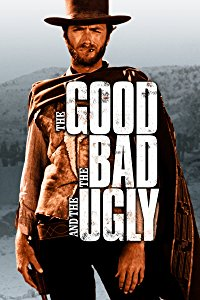
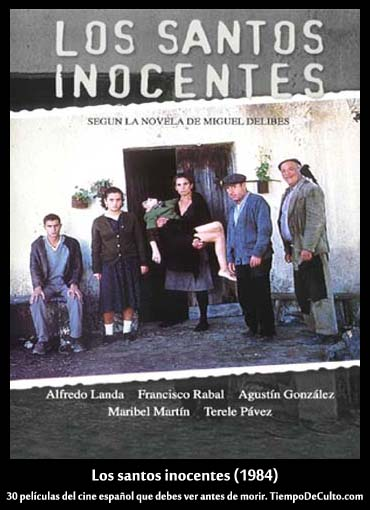

Daniel Contreras
Student at Le Wagon
Delighted of taking control of my life wishes by enjoying coding at Le Wagon Barcelona.
My goal: keep learning and enjoying!
My favorite movies
|  |
The Good, The Bad and The UglyThe Good, the Bad and the Ugly is a 1966 epic Spaghetti Western film directed by Sergio Leone and starring Clint Eastwood, Lee Van Cleef, and Eli Wallach. |

|
The Silence of the LambsThe Silence of the Lambs is a 1991 American horror-thriller film directed by Jonathan Demme and starring Jodie Foster, Anthony Hopkins, and Scott Glenn. |
 |
Los Santos InocentesLos santos inocentes or The Holy Innocents is a Spanish drama film directed by Mario Camus, based on famous Miguel Delibes' novel of the same title.. |